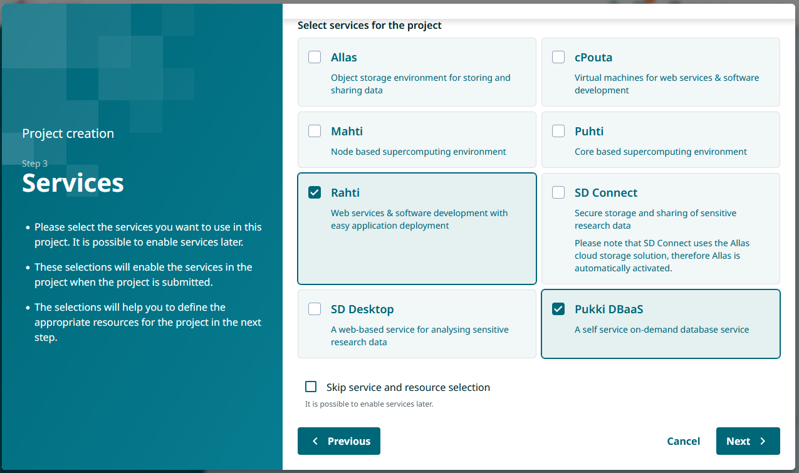
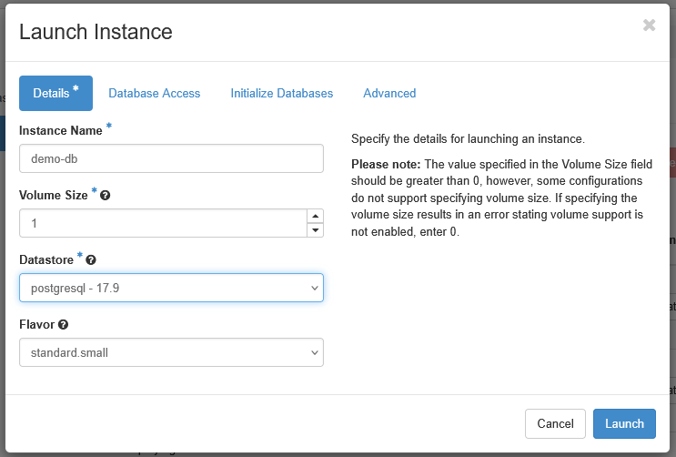
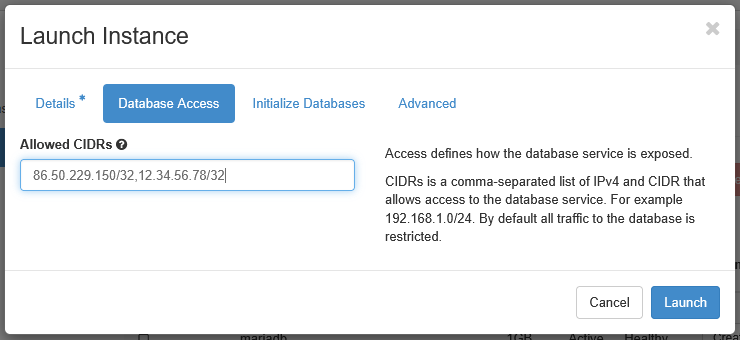
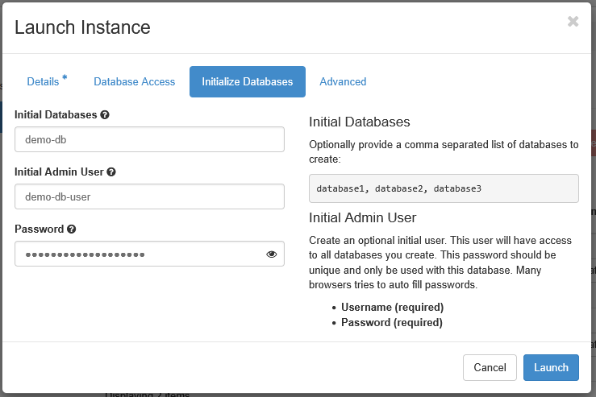
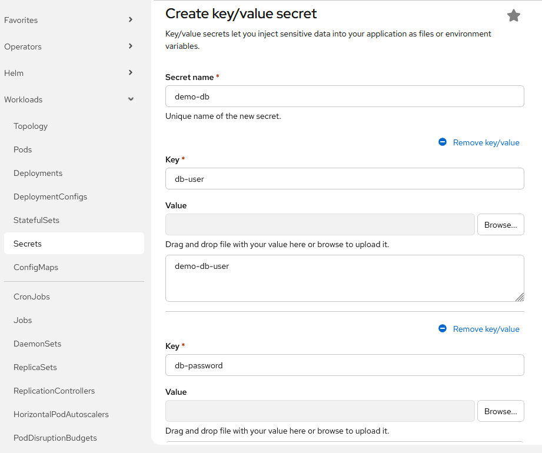
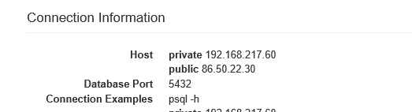
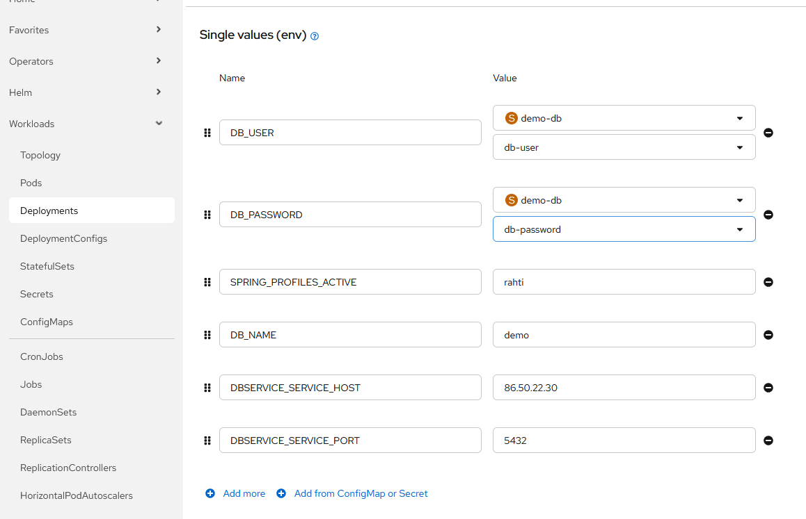

Pukki-tietokannan konfigurointi Rahti-palvelussa julkaistuun Spring Boot -palveluun
Tavoite
Tässä ohjeessa käydään läpi Pukki-tietokantapalvelun konfigurointi Rahti-palvelussa julkaistuun Spring Boot -palveluun.
Oletuksena on, että palvelu on onnistuneesti julkaistu Rahdissa ja se sisältää Spring-palvelimen joka tarvitsee tietokantayhteyden.
Vaihe 1: Pukki-palvelun käyttöönotto MyCSC-projektissa
- Kirjaudu MyCSC-tilillesi ja siirry projektiisi, johon haluat lisätä Pukki-tietokantapalvelun.
- Valitse projektisi dashboardilta "Palvelut" ja klikkaa "Lisää palvelu".
- Etsi palveluluettelosta "Pukki" ja valitse se.

Tarvitset sekä Pukki-palvelun että Rahti-palvelun, joten varmista, että molemmat on valittu.
Palvelun lisäämisessä projektiin on viivettä, joten kestää hetken, ennen kuin voit kirjautua Pukki-palveluun.
Vaihe 2: Tietokantainstanssin luonti Pukki-palvelussa
Kirjaudu Pukki-palveluun osoitteessa https://pukki.dbaas.csc.fi/ .
Valitse palvelun käyttöliittymästä "Launch instance" ja täytä vaaditut tiedot: - Instance name: Anna instanssillesi kuvaava nimi, esimerkiksi "spring-boot-db". - Datastore: Valitse haluamasi tietokantamoottori ja sen versio. Valittavana on joko PostgreSQL tai MariaDB. - Muut kentät voit jättää oletusasetuksille.

Tietokantainstanssilla on palomuurisäännöt, jotka estävät ulkopuoliset yhteydet. Sinun on lisättävä Rahti-palvelun IP-osoite sallituksi, jotta Spring Boot -palvelusi voi muodostaa yhteyden tietokantaan.
Voit sallia yhteydet Rahti-palvelusta lisäämällä kenttään Allowed CIDRs arvon 86.50.229.150/32.
Lisäksi voit sallia client-yhteydet omalla IP-osoitteellasi, jotta voit testata yhteyden muodostamista tietokantaan omalta koneeltasi. Saat oman julkisen IP-osoitteesi selville esimerkiksi osoitteesta https://ifconfig.me/. Lisää perään maski /32, esimerkiksi 12.34.56.78/32.
Voit lisätä useita osoitteita pilkulla eroteltuna (vain pilkulla, ei välilyöntejä).

Voit Initialize database-osiossa luoda tietokannan ja tietokantakäyttäjän:
- Initial Databases: Anna tietokannalle kuvaava nimi.
- Initial Admin User: Anna tietokantakäyttäjälle kuvaava nimi.
- Password: Anna tietokantakäyttäjälle vahva salasana.
Huomaa, että palomuurisääntö salli yhteydet kaikille Rahti-palvelun projekteille. Määritä käyttäjälle vahva salasana, jotta tietokanta on suojattu.

Kun olet täyttänyt vaaditut tiedot, klikkaa Launch. Tietokantainstanssin luonti kestää hetken.
Tietokantoja, tietokantakäyttäjiä ja palomuurisääntöjä voit hallinnoida myöhemmin Pukki-palvelun käyttöliittymästä.
Vaihe 3: Tietokantayhteyden konfigurointi Spring Boot -palvelussa
Tietokantayhteyden muodostamiseen sovellus tarvitsee määrittelemäsi tietokannan nimen, tietokantakäyttäjän nimen ja salasanan, sekä tietokantainstanssin julkisen host-osoitteen ja portin.
Määritä Spring Boot -palveluusi tietokantayhteyttä varten oma profiili (esim. rahti) ja sille application.properties-tiedosto (esim. application-rahti.properties), johon lisäät esimerkiksi seuraavat asetukset (esimerkissä käytössä PostgreSQL-tietokanta):
# Tietokantayhteyden asetukset
spring.datasource.url=jdbc:postgresql://${DB_SERVICE_HOST}:${DB_SERVICE_PORT}/${DB_NAME}
spring.datasource.username=${DB_USER}
spring.datasource.password=${DB_PASSWORD}
# Hibernate DDL -asetukset tarpeen mukaan
spring.jpa.show-sql=true
spring.jpa.generate-ddl=true
spring.jpa.hibernate.ddl-auto=update
Yllä olevassa esimerkissä tietokantayhteyden asetukset on määritetty käyttämään ympäristömuuttujia, jotka määritellään Rahti-palvelun konfiguraatiossa. Näin voit pitää tietokantayhteyden tiedot erillään sovelluskoodista ja hallita niitä Rahti-palvelun kautta.
Vie profiilitiedosto GitHub-repositorioon, josta Rahti-palvelu hakee koodin julkaistavaksi.
Vaihe 4: Ympäristömuuttujien määrittäminen Rahti-palvelussa
Seuraavaksi välitetään tietokannan konfiguraatiotiedot sovelluksellesi.
Tietokantakäyttäjän tiedot on hyvä määrittää salaisuutena (Secret) Rahti-palvelussa, ja viitata niihin ympäristömuuttujien kautta. Näin voit pitää tietokantakäyttäjään liittyvät tiedot suojattuina.
Luo Rahti-projektin käyttöliittymän osiossa Workloads/Secrets uusi Key/value -secret, ja määritä sinne Pukki-tietokantakäyttäjäsi käyttäjätunnus ja salasana.
Key on kentän tunniste, jota käytät viitatessasi tietokantakäyttäjään liittyviin tietoihin, ja Value on itse tieto, esimerkiksi tietokantakäyttäjätunnus tai salasana. Kenttiä voi lisätä valinnalla Add key/value.

Nyt pitää enää määrittää profiilissa käytetyt ympäristömuuttujat Rahti-julkaisusi (Deployment) konfiguraatioon:
- DB_SERVICE_HOST: Pukki-tietokantainstanssisi julkinen host-osoite, joka löytyy Pukki-palvelun käyttöliittymästä.
- DB_SERVICE_PORT: Pukki-tietokantainstanssisi portti, joka löytyy Pukki-palvelun käyttöliittymästä.
- DB_NAME: Tietokannan nimi, jonka määritit tietokantainstanssia luodessasi.
- DB_USER: Viittaus Secretissä määritettyyn tietokantakäyttäjään.
- DB_PASSWORD: Viittaus Secretissä määritettyyn tietokantakäyttäjän salasanaan.
- SPRING_PROFILES_ACTIVE: Profiili, joka sisältää tietokantayhteyden konfiguraation (esim. rahti).
Pukki-tietokantasi yhteystiedot löydät klikkaamalla luomaasi tietokantainstanssia Pukki-palvelun käyttöliittymässä. Yhteystiedot löytyvät Connection information-osiosta.

.Avaa Rahti-julkaisusi konfiguraatio ja lisää sinne ympäristömuuttujamääritykset_Environment_-osiossa.

.Kun painat Save, Rahti-palvelu julkaisee palvelusi uudelleen muuttuneella konfiguraatiolla. Uuden julkaisun jälkeen Spring Boot -palvelusi pitäisi pystyä muodostamaan yhteys Pukki-tietokantaan.
Voit tarkistaa yhteyden onnistumisen palvelusi lokista. Jos yhteys epäonnistuu, näet virheilmoituksia. Yleisiä ongelmia voivat olla esimerkiksi väärät yhteystiedot, puuttuvat palomuurisäännöt, virheelliset tietokantakäyttäjätiedot tai väärä profiili.
Client-yhteys Pukki-tietokantaan
Voit testata tietokantayhteyttä myös omalta koneeltasi, jos olet lisännyt oman julkisen IP-osoitteesi Pukki-palvelun palomuurisääntöihin.
Tarvitset jonkin SQL-client-ohjelman, esim. DBeaver tai tietokantajärjestelmän komentorivi-client (PostgreSQL:lle psql tai MariaDB:lle mariadb).
Yhteys Pukki-tietokantaan määritetään samalla tavalla kuin Rahti-palvelussa, mutta suoraan client-ohjelmaan. Käytä samaa host-osoitetta, porttia, tietokannan nimeä, käyttäjätunnusta ja salasanaa kuin Rahti-palvelun konfiguraatiossa.